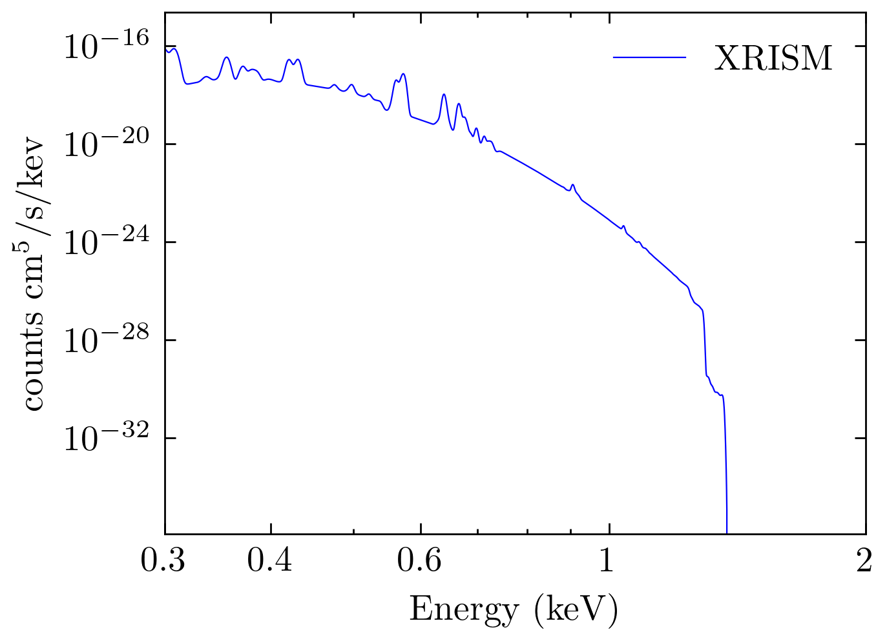
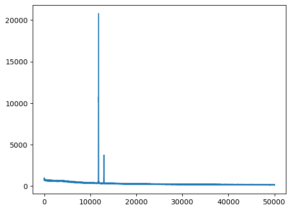
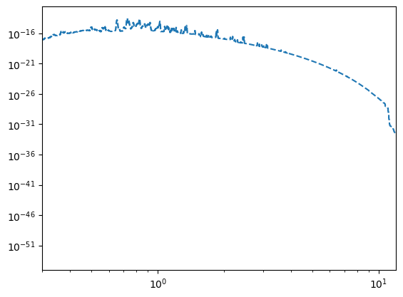

0131
from TNG_catcher.New import *
from TNG_catcher.TNG_catcher import *
import pyatomdb
import numpy as np
import matplotlib.pyplot as plt
from matplotlib.ticker import ScalarFormatter
test = SubhaloDataSet(342447)
test.GetAllData()
test.GetSubhaloID(["InternalEnergy","ElectronAbundance"],0)
x = test.DATA[0]["x"]
y = test.DATA[0]["y"]
z = test.DATA[0]["z"]
m = test.DATA[0]["Masses"]
u = test.DATA[0]["InternalEnergy"]
E = test.DATA[0]["ElectronAbundance"]
gamma = 5.0/3.0
KB = 1.3807e-16
mp = 1.6726e-24
h = 0.6775
mu = 4/(1 + 3*0.76 + 4*0.76*E) * mp
t = (gamma-1)* (u/KB)* mu* 1e10
Te = np.sum(t*m)/np.sum(m)
sess.set_response(rmf="./XRISM_simulation/Xrism_Resolve_ResponseFile/resolve_h7ev_2019a.rmf", arf="./XRISM_simulation/Xrism_Resolve_ResponseFile/resolve_pnt_spec_noGV_20190611.arf")
spec_sparse = sess.return_spectrum(kT)
spec_sparse = np.append(spec_sparse[0], spec_sparse)
bin_width = sess.ebins_out[2] - sess.ebins_out[1]
/home/nishihama/anaconda3/lib/python3.10/site-packages/pyatomdb/spectrum.py:2262: UserWarning: Response minimum energy is 0 keV, setting to small finite value (5.000000e-10 keV)
warnings.warn('Response minimum energy is 0 keV, setting to small finite value (%e keV)'%(self.specbins[1]*1e-6))
plt.figure(figsize=np.array(plt.rcParams.get('figure.figsize'))*1,dpi=400)
plt.plot(sess.ebins_out, spec_sparse*len(spec_sparse)*bin_width,label="XRISM",lw=0.4,c="b")
ax = plt.gca()
sess2 = pyatomdb.spectrum.CIESession()
ebins = np.linspace(0.2,12,10000)
sess2.set_response(ebins, raw=True)
spec = sess2.return_spectrum(kT)
spec = np.append(0, spec)
# bin_width2 = sess2.ebins_out[2] - sess2.ebins_out[1]
# plt.plot(sess2.ebins_out, spec*len(spec)*bin_width2, label="APEC",lw=1)
plt.xscale("log")
plt.yscale("log")
plt.ylabel(r"counts $\text{cm}^5 / \text{s} / \text{kev}$")
plt.xlabel("Energy (keV)")
plt.xlim(0.3,2)
plt.legend(frameon=False)
# plt.tick_params(labelbottom=False)
plt.xticks([0.3,0.4,0.6,1,2],["0.3","0.4","0.6","1","2"])
# plt.xticks([])
plt.savefig("XRISM_APEC_comparison3.svg")

[<matplotlib.lines.Line2D at 0x7fb09a77f130>]

FITS_rec([( 0, 673, 0, 1), ( 1, 704, 0, 1), ( 2, 826, 0, 1), ...,
(49997, 145, 0, 1), (49998, 128, 0, 1), (49999, 106, 0, 1)],
dtype=(numpy.record, [('CHANNEL', '>i4'), ('COUNTS', '>i4'), ('QUALITY', '>i2'), ('GROUPING', '>i2')]))
50000
XTENSION= 'BINTABLE' / binary table extension
BITPIX = 8 / 8-bit bytes
NAXIS = 2 / 2-dimensional binary table
NAXIS1 = 12 / width of table in bytes
NAXIS2 = 50000 / number of rows in table
PCOUNT = 0 / size of special data area
GCOUNT = 1 / one data group (required keyword)
TFIELDS = 4 / number of fields in each row
TTYPE1 = 'CHANNEL ' / label for field 1
TFORM1 = 'J ' / data format of field: 4-byte INTEGER
TTYPE2 = 'COUNTS ' / label for field 2
TFORM2 = 'J ' / data format of field: 4-byte INTEGER
TTYPE3 = 'QUALITY ' / label for field 3
TFORM3 = 'I ' / data format of field: 2-byte INTEGER
TTYPE4 = 'GROUPING' / label for field 4
TFORM4 = 'I ' / data format of field: 2-byte INTEGER
EXTNAME = 'SPECTRUM' / name of this binary table extension
HDUCLASS= 'OGIP ' / format conforms to OGIP standard
HDUCLAS1= 'SPECTRUM' / PHA dataset (OGIP memo OGIP-92-007)
HDUVERS1= '1.1.0 ' / Version of format (OGIP memo OGIP-92-007a)
TELESCOP= 'XRISM ' / mission/satellite name
INSTRUME= 'RESOLVE ' / instrument/detector name
CHANTYPE= 'PI ' / channel type (PHA, PI etc)
DATE = '2019-06-12T19:15:55' / file creation date (YYYY-MM-DDThh:mm:ss UT)
HISTORY Fake data file created by XSPEC version: 12.10.1f "fakeit" command
LONGSTRN= 'OGIP 1.0' / The HEASARC Long String Convention may be used.
COMMENT This FITS file may contain long string keyword values that are
COMMENT continued over multiple keywords. The HEASARC convention uses the &
COMMENT character at the end of each substring which is then continued
COMMENT on the next keyword which has the name CONTINUE.
FKSRC001= '(bknpower + lorentz + lorentz + lorentz + lorentz + lorentz + loren&'
CONTINUE 'tz + lorentz + lorentz)constant + (lorentz + lorentz + lorentz + lo&'
CONTINUE 'rentz + lorentz)constant'
FKRSP001= 'resolve_h7ev_2019a.rmf'
RESPFILE= 'resolve_h7ev_2019a.rmf' / associated redistrib matrix filename
ANCRFILE= ' ' / associated ancillary response filename
CORRFILE= ' ' / associated correction filename
CORRSCAL= -1. / correction file scaling factor
BACKFILE= ' ' / associated background filename
EXPOSURE= 1000000000. / exposure (in seconds)
TLMIN1 = 0 / Lowest legal channel number
TLMAX1 = 49999 / Highest legal channel number
DETCHANS= 50000 / total number possible channels
POISSERR= T / Pois. err assumed ?
AREASCAL= 1. / area scaling factor
BACKSCAL= 1. / background file scaling factor
plt.plot(sess.ebins_out[1:], spec_sparse[1:], '--', drawstyle='steps', label='Sparse')
plt.xscale("log")
plt.yscale("log")
plt.xlim(0.3,12)
plt.show()
